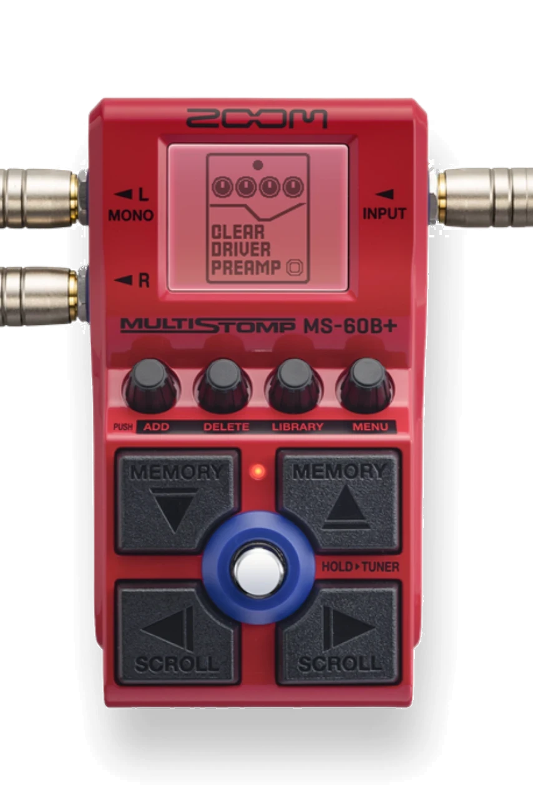
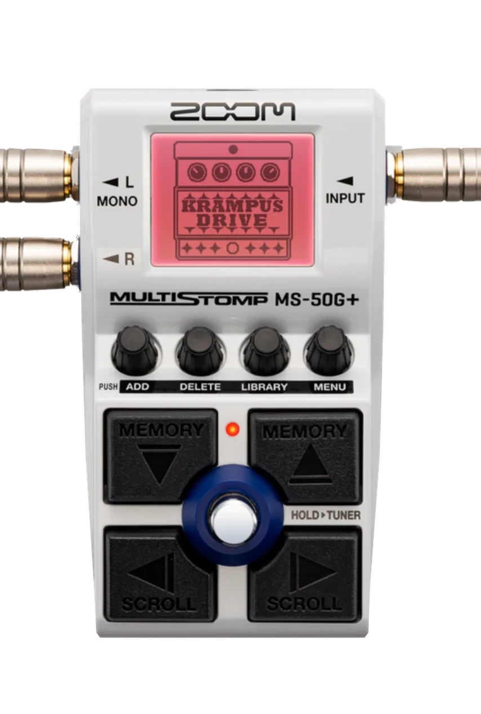
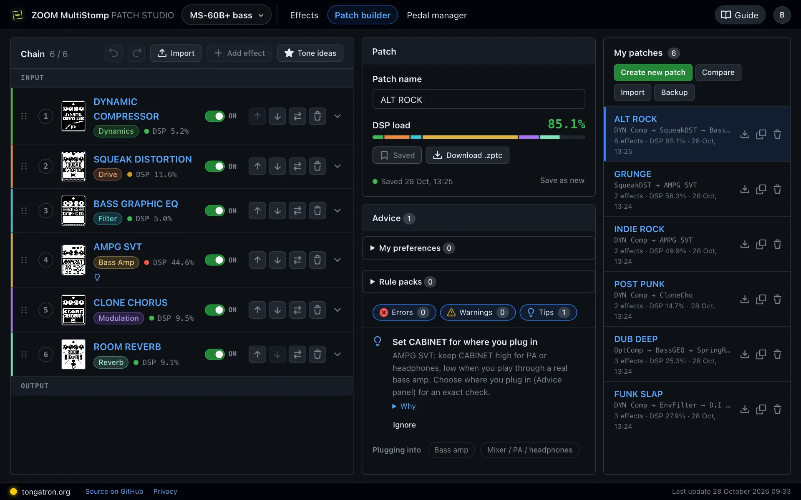
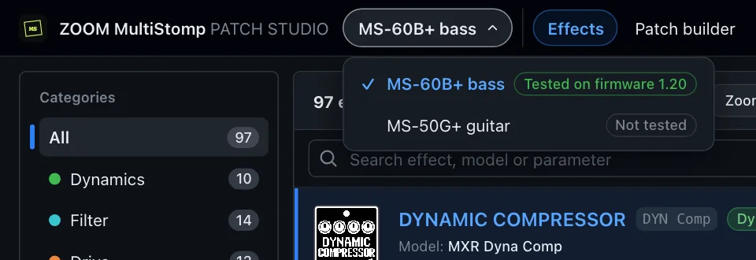
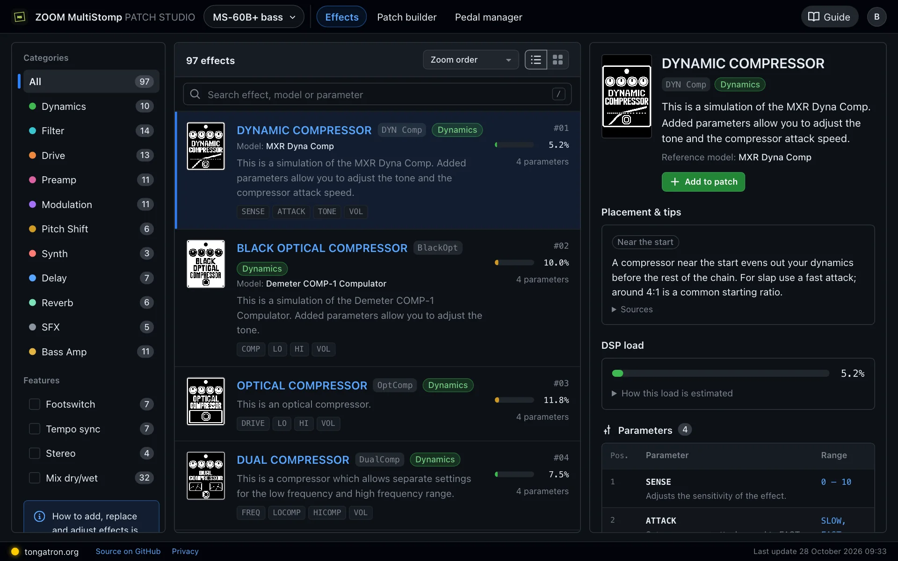
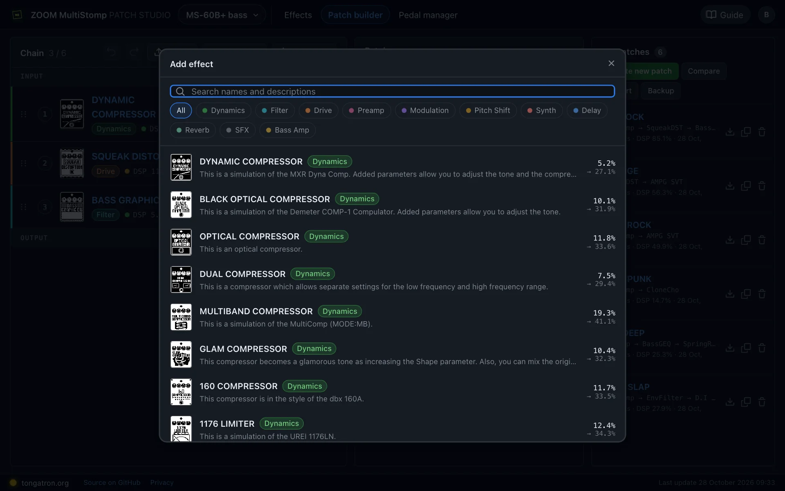
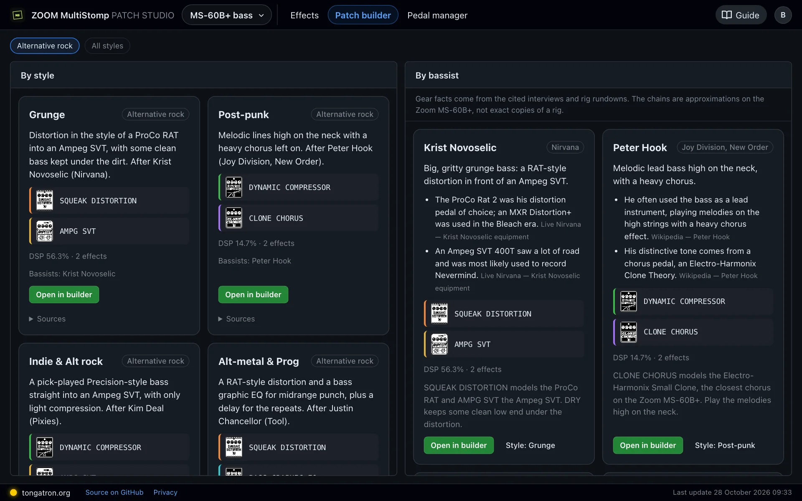
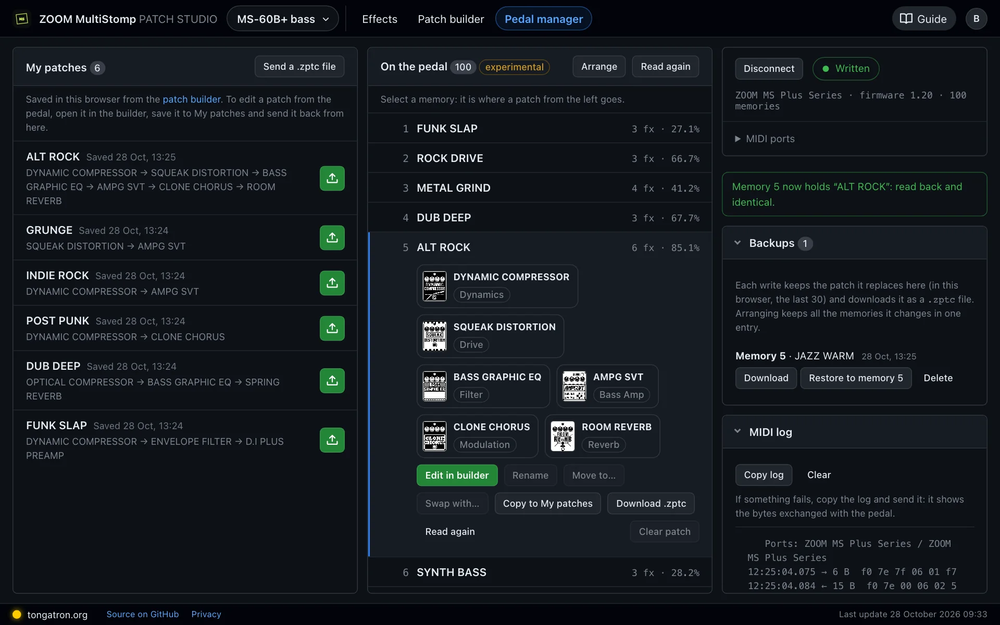
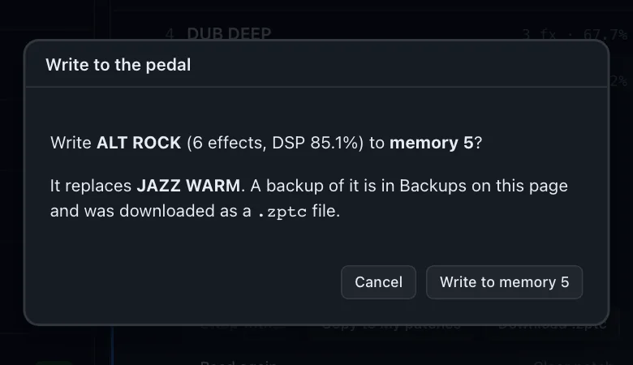
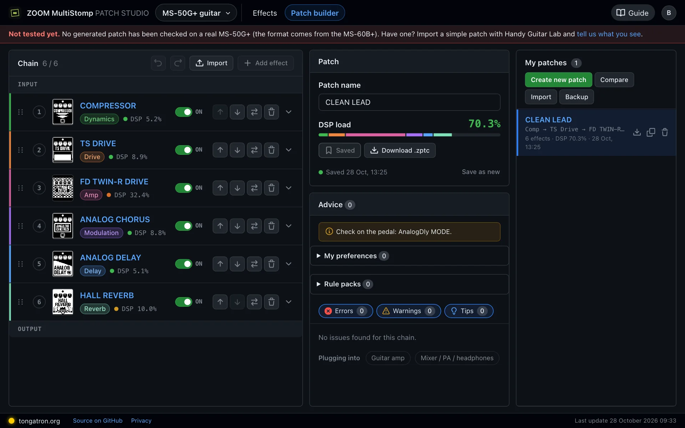

MS-60B+Bass
Tested on firmware 1.20- 97 effects
- 11 bass amps
- 12 advice styles
The full studio: advice on effect order and levels with sources, style profiles, Tone ideas by bassist, and the Pedal manager to read and write the pedal over USB.
ZOOM MultiStomp Patch Studio · for the MS-60B+ bass and MS-50G+ guitar
Browse every effect with the original ZOOM text, build a 6-effect chain with a live DSP meter, then export a .zptc file for Handy Guitar Lab or write it to the MS-60B+ over USB. A free account keeps your patches safe on every device.



Pedals
Switch between them at the top of every page of the studio. The bass version is tested on a real pedal; the guitar version is new and waiting for testers.

The full studio: advice on effect order and levels with sources, style profiles, Tone ideas by bassist, and the Pedal manager to read and write the pedal over USB.
Built from the official MS-50G+ documentation with the same file format as the MS-60B+. Generated patches have not been checked on a real pedal yet.
How it works
Nothing to install and no account needed to start. Sign in when you want your patches kept safe and on every device.
Pick up to 6 effects, drag them into order and set every parameter with the real ranges.
Watch the DSP load against the 100% limit and read the advice before you leave the desk.
Download the .zptc file for Handy Guitar Lab, or connect the MS-60B+ by USB and write it from the Pedal manager.
A look inside
Every page fits the window: the page itself never scrolls, only the lists inside it. These are the real pages, shown for the MS-60B+.
All 97 effects of the MS-60B+ (127 on the MS-50G+), described exactly as in the ZOOM Effects List.

Up to 6 effects per patch, as on the pedal. Search names and descriptions, or narrow the list by category.

Starting chains by playing style and by bassist, focused on alternative rock.

Pedal manager · MS-60B+ · experimental
Connect the MS-60B+ with a USB cable and see the patches stored on the pedal next to the ones you saved, without Handy Guitar Lab.
Works in Chrome or Edge on a computer (Web MIDI). Experimental: the USB protocol is not documented by ZOOM.


Free account
You can use everything without signing in, but then your work lives only in one browser. A free account keeps it on the server and brings it to every device where you sign in.
Only your email and a password are needed. No newsletter, no tracking cookies: see what is stored.
Features
Everything works for both pedals unless it says otherwise.
Every effect with the original ZOOM Effects List text, parameters and ranges, placement tips and an estimated DSP load. Search by effect, model or parameter; filter by category and feature.
Up to 6 effects per patch, reorder by dragging or from the keyboard, undo and redo.
The load of each effect and of the whole chain, on the same scale as the Handy Guitar Lab "Processor" meter.
A file that imports into Handy Guitar Lab. On the MS-60B+ it round-trips byte for byte against real exports.
Save, save as new, compare two versions, import and back up. Kept in your account when you sign in.
Read and write the MS-60B+ memories over USB, with a backup before every write and a read-back check. Rename, move, swap and arrange memories too.
Your patches, settings and pedal backups on every device, for both pedals. Download or delete them any time.
Flags effect order, hot levels and heavy chains, explains why with sources and often offers a one-click fix. The guitar version has the objective checks only.
Starter chains and advice tuned per playing style, adapted to a bass amp or a mixer.
Starting points by style and by bassist, focused on alternative rock. Each one cites its sources and opens in the builder.
Installable as an app on a computer or a tablet held sideways, so it works at rehearsals too.
Help wanted
One quick test on a real pedal is enough to confirm the guitar version, or to show what needs fixing.
.zptc.